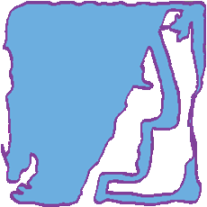

CV
Télécharger (.pdf)Recommandation
Voir la lettre (.pdf)Vocation & Trajectoire
Je suis... étudiant en 2ème année de BUT Informatique à l'IUT de Villetaneuse. Passionné par la résolution de problèmes techniques complexes, j'apprécie tout particulièrement l'architecture logicielle et la conception d'applications.
Je souhaite devenir... ingénieur en informatique spécialisé dans le développement logiciel. Mon objectif est de concevoir des solutions robustes de bout en bout, de l'architecture backend jusqu'au déploiement en production.
Pour cela, je compte... poursuivre mes études en intégrant une école d'ingénieurs, idéalement en alternance. Cette poursuite d'études me permettra de perfectionner mes compétences techniques approfondies tout en acquérant la vision globale et managériale nécessaire pour piloter des projets d'envergure.
Pourquoi l'informatique ?
L'élément déclencheur : Cela a débuté au lycée avec la spécialité NSI et ma participation à des concours de cybersécurité. En parallèle, mon intégration au programme "Une grande école, pourquoi pas moi" à l'ECAM-EPMI a été décisive. Les échanges avec des ingénieurs et les ateliers d'éloquence ont forgé ma volonté de rejoindre le millieu de l'informatique.
Prise de conscience : Si la cybersécurité a été mon premier déclic, mon parcours en BUT et surtout mon stage ont fait évoluer ma vision. J'ai réalisé que ma véritable vocation est le développement logiciel. Construire des architectures complexes et transformer des idées en applications concrètes, c'est ce qui me stimule.
Mes objectifs
- À court terme (BUT 3 / Alternance) : Décrocher un contrat en alternance. L'objectif est de confronter mes compétences académiques (architecture, backend, DevOps avec Docker) aux contraintes réelles de production en entreprise. Une alternance me permettra aussi d'augmenter mes chances d'admission dans une école d'ingénieur.
- À moyen terme (Début de carrière) : Consolider mon expertise en tant qu'ingénieur logiciel. Je souhaite intervenir sur des architectures complexes, maîtriser le cycle de vie complet d'une application (CI/CD) et être garant de la qualité du code.
- À long terme (Management) : Je souhaite évoluer vers un poste de Lead Developer ou Chef de projet technique. Avoir dirigé une équipe de 23 étudiants lors de la Nuit de l'Info a été une révélation : j'ai adoré la dynamique de coordination, la répartition des tâches et le pilotage humain d'un projet sous pression.
Compétences & Qualités
Hard skills
Langages : Python, Java, C#, PHP, Bash, Assembleur RISC-V.
Web & App : HTML5/CSS3, JavaScript, Flask, .NET (Winforms, Syncfusion).
Data & Outils : PostgreSQL, SQLite, Looping, Git/GitHub, Docker.
Soft skills
Leadership : Gestion de projet et management technique d'équipe (Nuit de l'Info).
Communication : Aisance à l'oral, éloquence et présentation technique de projets.
Méthodologie : Travail en mode Agile, collaboration et productivité sous pression.
Mes qualités
Rigueur : Sensible à la qualité logicielle (Clean Code, StyleCop, tests unitaires).
Persévérance : Capacité à analyser et résoudre des problèmes algorithmiques complexes.
Curiosité : Veille active sur les nouvelles technologies et la cybersécurité.
Bilan du stage de BUT2 chez Nolmë Informatique

Missions : Rendre un logiciel de généalogie canine utilisable en conditions réelles en repensant son architecture (C#.NET) et en optimisant ses algorithmes mathématiques de consanguinité.
Synthèse sur les 6 compétences du BUT2 Informatique :
- Réaliser : Audit du code existant, refonte de l'architecture logicielle avec les Design Patterns (Factory, Strategy) et développement de l'interface graphique avec Syncfusion.
- Optimiser : Réduction de la complexité temporelle de O(2^n) à O(n) en passant à la méthode tabulaire de Meuwissen & Luo et division de la consommation RAM éphémère par 172 en remplaçant un LINQ par des
HashSetdans une méthode centrale du projet. - Administrer : Sensibilisation à l'administration système via l'utilisation de l'agent RMM Datto pour la supervision de mon poste, et compréhension des concepts réseaux avancés (APIPA, DHCP, VLAN) lors des réunions techniques.
- Gérer : Sauvegarde et manipulation de données généalogiques massives stockées en local via SQLite et intégration de l'ORM Entity Framework pour sécuriser et fluidifier les requêtes de l'application.
- Conduire : Gestion du projet en autonomie lors d'un télétravail intégral, prise de décisions techniques argumentées (par exemple choix du type
floatvsdoublevia benchmark), ainsi qu'une validation continue grâce au développement de plus de 100 tests unitaires avec MSTest. - Collaborer : Travail quotidien en binôme avec partages d'écran, commentaire stricte avec des normes de nommage StyleCop pour garantir un code homogène et une communication constante avec le chef de projet (mon tuteur de stage).
Bilan critique & Auto-évaluation : Ce stage 100% distanciel a été un véritable défi d'autonomie et de discipline. Confronté à un algorithme initial qui s'effondrait sous le volume de données, j'ai pris conscience qu'un code fonctionnel n'est pas forcément viable en production. J'ai acquis une grande maturité sur la gestion de la mémoire et sur l'importance cruciale d'anticiper la dette technique.
Hackathons

Work in progress & Vigilances
Points d'amélioration & Lacunes
Bien que je maîtrise la conteneurisation basique (Docker) grâce à la SAE du S4, je manque encore de pratique sur les architectures Cloud à grande échelle. De plus, j'ai parfois tendance à foncer dans le développement au lieu d'anticiper systématiquement l'architecture globale via des Design Patterns solides (comme le MVC strict ou la Clean Architecture).
Progrès à accomplir
Pour ma troisième année, mon objectif principal est d'automatiser la qualité de mon code. Je souhaite mettre en place de véritables pipelines d'Intégration et de Déploiement Continus (CI/CD) sur GitHub ou GitLab et aussi d'approfondir l'utilisation de frameworks industriels avancés (comme .NET ou Spring Boot) en condition réelle d'entreprise.
Analyse et preuves des SAÉ du S3 & S4
👉 Cliquez sur une SAÉ pour ouvrir l'analyse détaillé et les preuves de compétences.